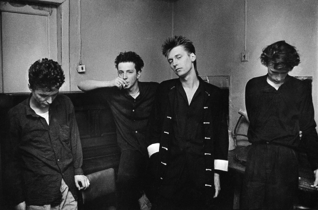

Альбом был записан в 1989 году на студии Кости Мрака в Петергофе. Долгие годы запись лежала не востребованной и только в 2003 году была выпущена на кассете лейблом Карма мира рекордз.
Дурное Влияние - Неподвижность
Судьба подарила “Дурному Влиянию” занимательную биографию. Они были готами без готики, звездами без стадионов, нервной компанией адептов Питера Мёрфи и Яна Кертиса перед лицом наступающей коммерческой рок-волны, было исчезли, и вот, вернулись прекрасными декадентскими цветами из блаженного времени ленрок-клубовского заката и начала движения “независимых”. Судьба мало кого пощадила, но интерес к песням ДВ и многочисленные (и не всегда безуспешные) попытки нового поколения слушателей вытащить группу из небытия на новорожденную дарк-сцену говорят о том, что юношеские мечты музыкантов не прошли даром и хорошие песни не исчезают.
Леонид Новиков
главный редактор Rolling Stone


Спустя ещё 14 лет в 2017 году альбом вышел на виниловых пластинках в белом и чёрном цвете.
Треклист
Сторона А:
- 24 часа
- Если я лгу
- Дай мне уйти
- Неподвижность
Сторона Б:
- Жизнь как болезнь
- Мёртвые смотрят вверх
- Сейчас
- Спать
Видео
24 часа
Первый клип Дурного Влияния, снятый в 1988 году.
Режиссёр: Андрюс Венцлова
Сейчас
Второй и последний клип Дурного Влияния, снятый в 1989 году.
Режиссёр: Олег “Акля” Аклас